CNI Installation (Calico)¶
This section describes how to install Calico as the Container Network Interface (CNI) for the Kubernetes Home Lab.
Calico is responsible for: - Pod-to-Pod networking across nodes - Pod IP address allocation - Network routing and encapsulation - Network policy enforcement (optional, later)
Prerequisites¶
Before installing Calico, ensure that:
- the Kubernetes control plane is initialized
- kubectl access is configured
- all nodes are in NotReady state (expected before CNI installation)
Verify current node status:¶
kubectl get nodes
Expected output:
- Control plane node is present
- Status is NotReady
Network design assumptions¶
This lab uses the following network ranges:
| Network type | CIDR |
|---|---|
| Home LAN | 192.168.1.0/24 |
| Pod Network | 10.244.0.0/16 |
⚠️ The Pod Network CIDR must match the value provided during kubeadm init.¶
Why Calico¶
Calico was selected for this home lab because it provides:
- Native Kubernetes networking (no overlay requirement)
- High performance and low overhead
- Optional encapsulation (IP-in-IP or VXLAN)
- First-class support for NetworkPolicies
- Production-grade behavior while remaining simple to operate
Logical Pod Network topology (Calico)¶
This diagram represents the logical networking model once Calico is installed.
- Each node is assigned a Pod CIDR
- Pods receive IPs from the Pod Network range
- Calico routes Pod traffic between nodes
- No NAT is required between Pods

Install Calico¶
Calico is installed by applying the official manifest.
Download the Calico manifest¶
curl -O https://raw.githubusercontent.com/projectcalico/calico/v3.27.3/manifests/calico.yaml
¶
(Optional) Review the manifest:
less calico.yaml
Apply the manifest¶
kubectl apply -f calico.yaml
This will deploy:
- calico-node (DaemonSet)
- calico-kube-controllers
- required CRDs and RBAC rules
Verify Calico deployment¶
Check Calico pods:¶
kubectl get pods -n kube-system
Expected output:¶
- calico-node pods running on all nodes
- calico-kube-controllers running
Example:¶
calico-node-xxxxx Running
calico-kube-controllers Running
Verify node readiness¶
Once Calico is running, nodes should transition to Ready.
kubectl get nodes
Expected output:
- control plane node is Ready
Verify Pod networking¶
Deploy a simple test Pod:¶
kubectl run test-pod --image=busybox --restart=Never -- sleep 3600
Verify Pod status:¶
kubectl get pods
Expected:¶
- Pod is Running
(Optional) Check Pod IP:¶
kubectl get pod test-pod -o wide
Cleanup test Pod¶
kubectl delete pod test-pod
Result¶
At this stage:
- Calico is installed and operational
- Pod networking is functional
- The cluster is ready to accept worker nodes